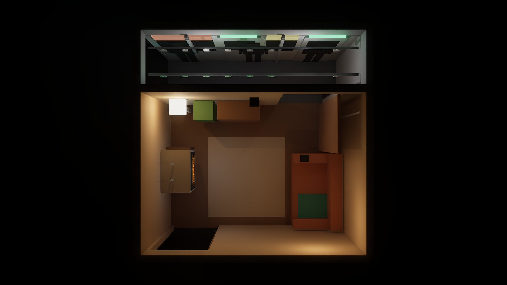
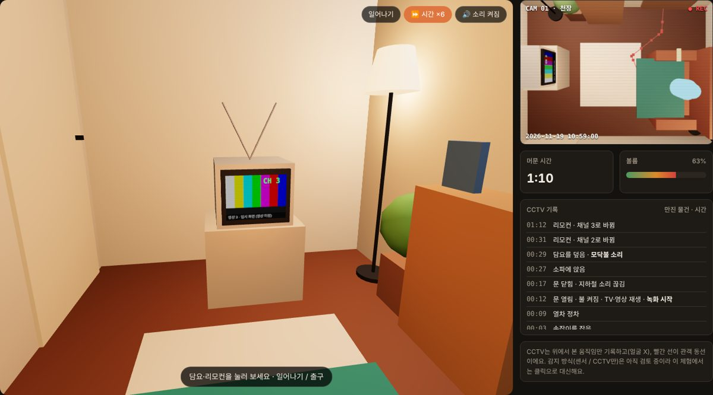
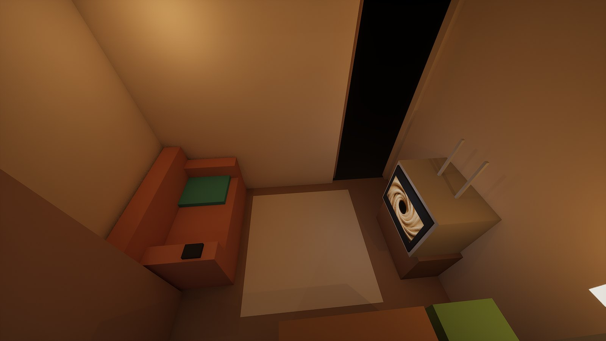

Home Sweet Home AI 기반 영상 제작 워크샵 기말 · 크브페 지원작
크브페 마감 11/23(월) 23:59업데이트 11/193m × 3m 체험 설치 · Unreal 블루프린트 + 아두이노
좁은 지하철 칸(사회)을 지나 문을 열면 따뜻한 집이 나온다. 편해질수록 집은 조금씩 불편해지고, 언제 나갈지는 관객이 정한다.
- 01
기획 의도 초안
퇴근길 지하철에서 집으로 — 편안함이 안주로 바뀌는 순간

- 02
공간 소개 확정
지하철 칸 · 가벽과 문 · 집 · 출구, 곳마다 치수와 의미

- 03
가구 정리 확정일부 미정
가구·소품 하나씩 — 크기, 위치, 역할, 확정 여부

- 04
확정된 내용 11/18 회의
확정 · 미정 · 희망을 목록으로, 관객이 하는 일 순서

- 05
직접 체험 3D
웹 3D로 관객이 되어 보기 + 천장 CCTV 작동 화면

- 06
인터랙션·장비 정지원 작업 중
센서 위치 · 작동 구조 · QR 화면 · 장비 목록

받기

지난 배치안·비교·버전 기록은 전체 기록에 그대로 남아 있어요.